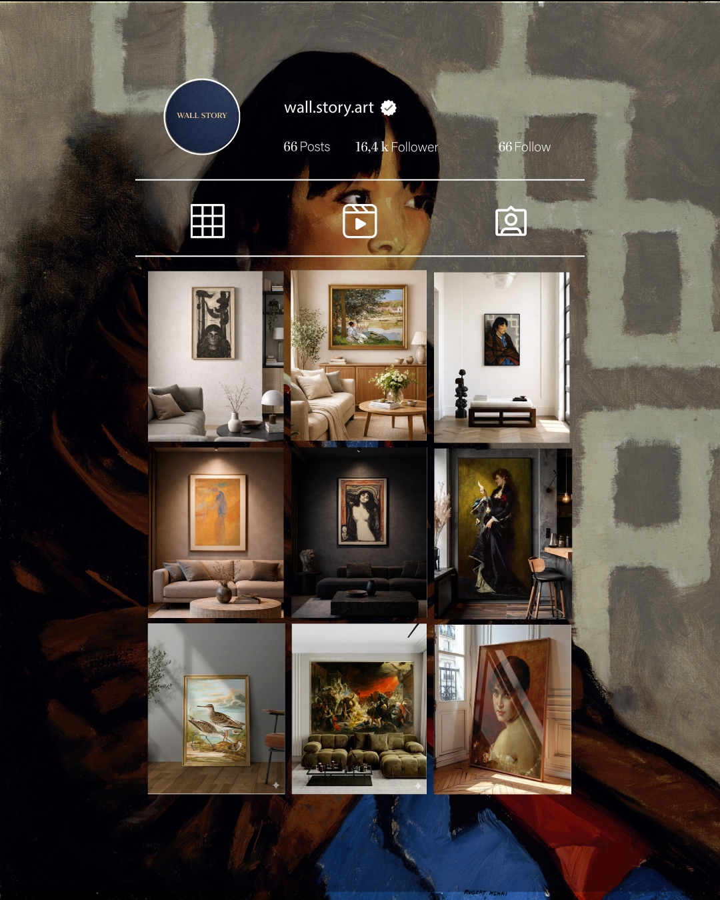
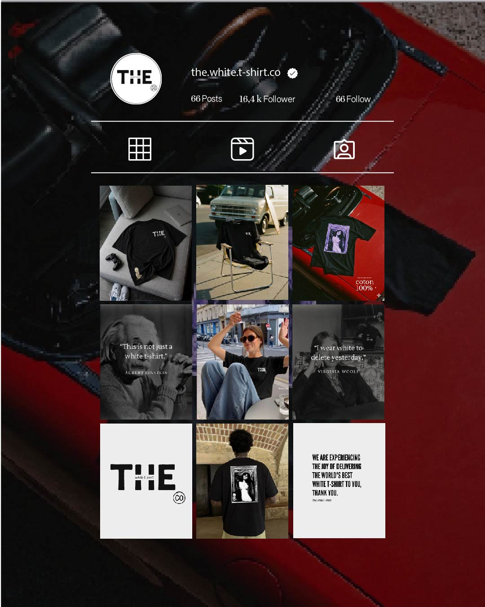
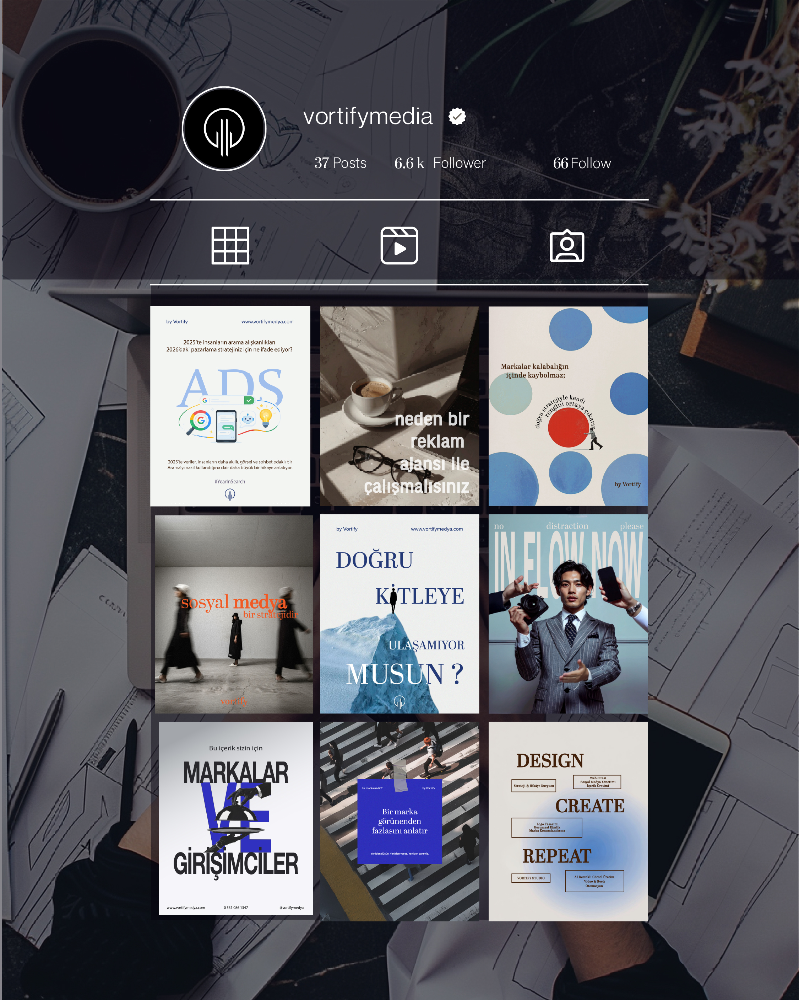
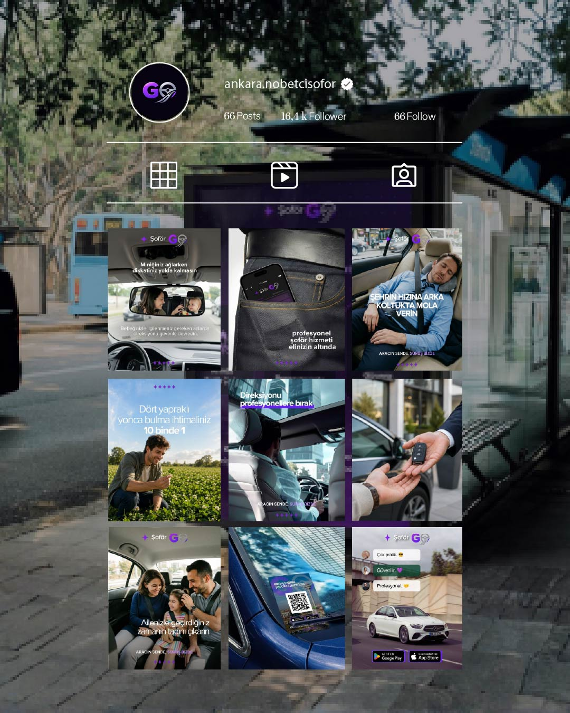
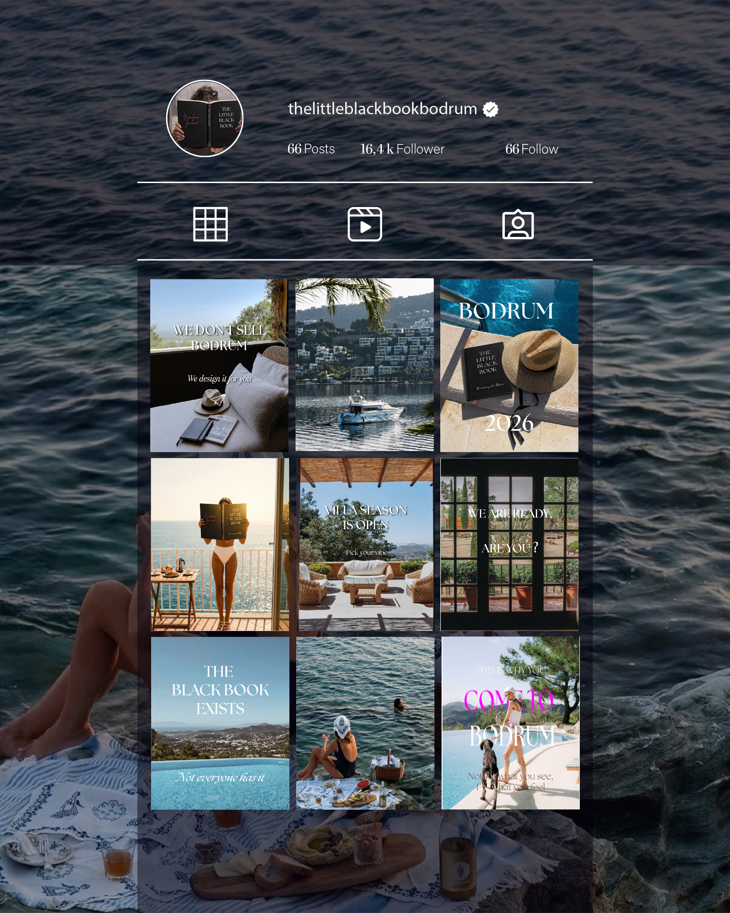
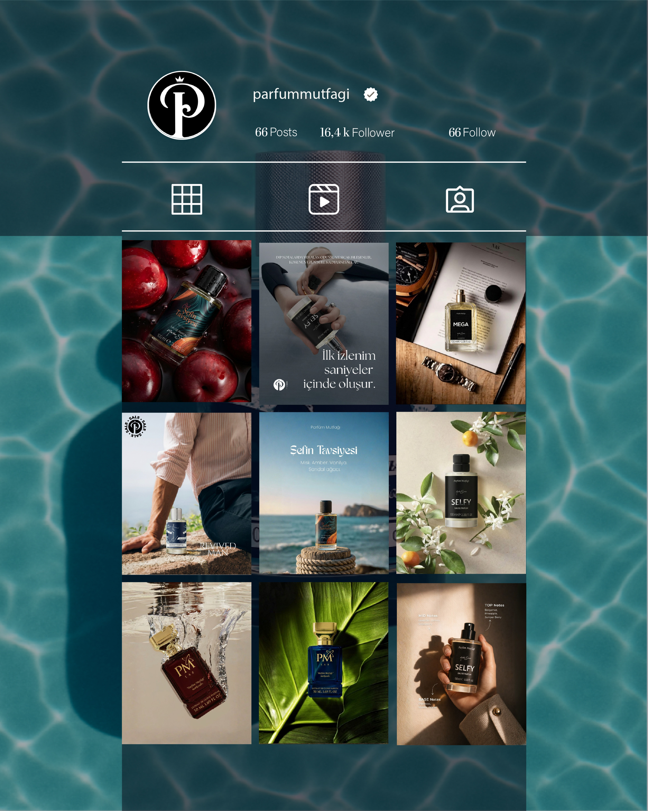
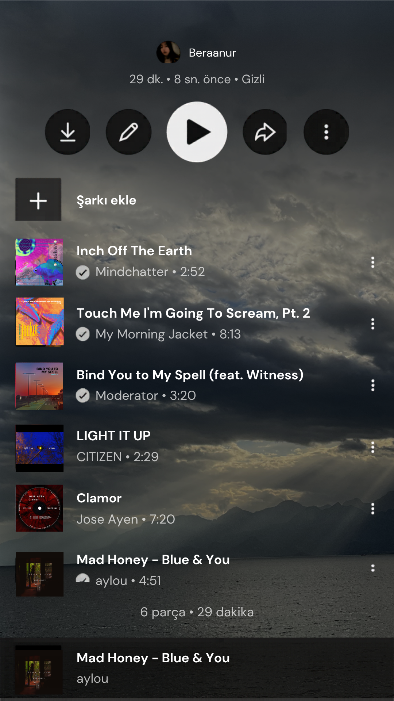
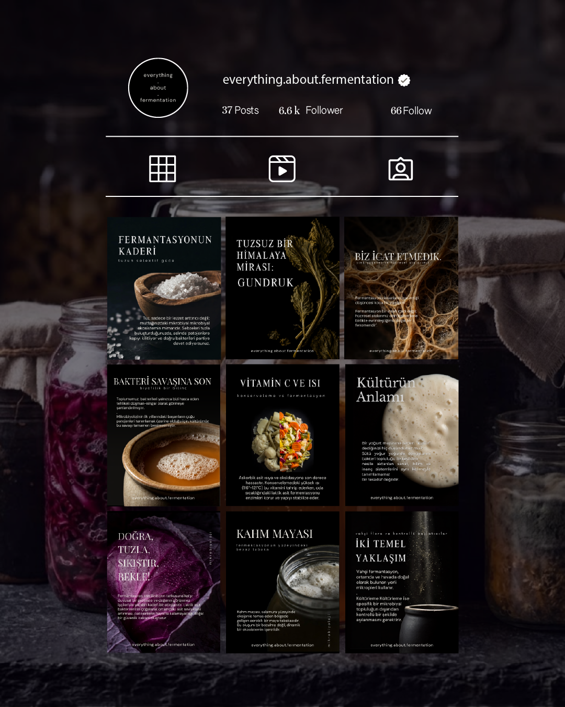

THE BLACK DOT
Beraanur Şahin
Marka kimliği ve grafik tasarım
Örnek tasarımlarımı görmek için aşağı kaydırın
Keşfet
Beraanur Şahin
Marka kimliği ve grafik tasarım
Örnek tasarımlarımı görmek için aşağı kaydırın

Kurduğum ve yaratıcı direktörlüğünü yaptığım, küratörlük yapılmış tablolar ve iç mekan estetiği üzerine inşa edilmiş bir sanat markası. Her post, mekan ile eserin uyumunu öne çıkaran tutarlı bir anlatıya katkıda bulunuyor.

Minimal bir t-shirt markası için sosyal medya içerik tasarımı. Sade, güçlü ve tutarlı görsel dil.

Dijital büyüme için yaratıcı içerik çözümleri. İçerik yazımı, post tasarımı, içerik takvimi ve hesap yönetimi.

Aracın sende, Sürüş bizde. Full marka kimliği: logo, renk, tipografi, sosyal medya şablonları, app UI ve kurumsal kimlik.

Bodrum'daki seçili mekan ve deneyimleri kürate eden lifestyle içerik markası. Minimal ve rafine estetik yaklaşım.

Premium ve sade görsel dil ile ürün fotoğraf konseptleri ve sosyal medya içerik tasarımı. AI destekli görsel üretim.

Orijinal fotoğraflar kullanılarak tasarlanan albüm kapakları. Her kapak, müziğin ruhunu görsel bir dile çeviriyor.

Fermantasyon bilimi ve kültürü üzerine kurduğum kişisel içerik markası. Tuzdan bakteriye, kahm mayasından kültürleme yöntemlerine kadar geniş bir yelpazede eğitici carousel içerikleri tasarlıyorum; koyu ve editoryal bir görsel dille bilimsel bir konuyu estetik bir anlatıya dönüştürüyorum.
Grafik tasarım ve dijital içerik üretimi odağında, markalar için stratejik ve tutarlı görsel kimlikler tasarlıyorum. Her projede, markanın karakterine uygun bir dil oluşturup bunu tüm temas noktalarında sistemli şekilde uygulamayı hedefliyorum. İçerik, tasarım ve kullanıcı algısını birlikte ele alan bir yaklaşım benimsiyorum.
Logo, renk, tipografi ve marka dili tasarımı
Kartvizit, antetli kağıt, kurumsal materyaller
Post, carousel, story ve içerik takvimi
Broşür, katalog, afiş ve baskı tasarımları
Yeni bir proje, çılgın bir konsept ya da sadece merhaba demek için — kapım her zaman açık. Kahve benden.